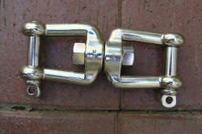

Understanding tense and aspect
Three ideas to start with. It's important to understand the difference:
- Time: this refers to when an event happens.
- Tense: this refers to the
form of the verb.
For example:
walked and had walked are past tenses
walks and is walking are present tenses - Aspect: this refers to
how the speaker
thinks about the event in time. For example:
He walked here is finished and in the past
He has walked here means he is here now and I know how he got here
She is playing the piano refers to right now (and not finished) or an arrangement for the future and not started
 |
The 2 most important things to understand about English tenses |
- English has two types of tenses: absolute and relative.
- English has only two tenses: past and non-past. There is no pure future tense in English.
When you understand these two things, life is much easier.
Absolute and Relative / relational tense forms
 |
Absolute tenses |
These tenses are fixed
in time. For example: I went to London. I will be 25 years old. I am here. |
We can use fixed times and dates
with these tenses because they are absolute. For example: He arrived yesterday I will be in Spain next year She cycled to work last week I was 31 on 14th March The train will arrive at six o'clock |
|  |
Relative /relational tenses |
We can only understand the time of
these in relation to another time.
For example: I have done the work and I can go home now. He had finished the work before he went home. |
We do not use fixed times
with these tenses. We often use words to join two times or
dates together. For example: Up to now, she has been very kind I have never eaten this before Have you finished yet? She had lived in the same house since she left school So far, this has worked well I will not have finished after the deadline and so on. |
Here are some diagrams to help you understand this very important difference.
-
Absolute tenses: Past simple, Present simple, Future simple. These are fixed times and stand alone.
-
Relative / relational tenses: Present Perfect and Going to. We can only understand these when they ideas are joined together.
I left Paris
is an absolute tense
I have arrived in London means
I am here NOW.
I am going to leave London means
I have the plan NOW.
Here is another example. We understand the past in relation to what happened before:
My car had broken down BEFORE I called a taxi.
 |
The English tenses |
Here is a picture of all the main tenses in English

Click here for a test to see if you can remember the names of the tenses in English.
The past |
These are the past tenses in English:
| Tense | Main uses | Examples | NOTICE |
| Past simple ABSOLUTE |
Finished past action or condition | I ate at six, I lived in Brazil, I was happy | ALL THESE SENTENCES ARE ABOUT A FIXED TIME |
| Repeated past action | I always ate at six | ||
| Past progressive ABSOLUTE |
Interrupted past action | I was eating when he rang | |
| Progressive action at a particular time | I was eating at 7 | ||
| Parallel past actions or events | It was raining and the wind was blowing, I was eating while she was watching television | ||
| Past perfect RELATIVE |
Completed actions before others in the past | I had already spoken to her before he asked | WE CAN ONLY UNDERSTAND THESE TENSES WHEN THEY ARE TOGETHER. THEY RELATE TO EACH OTHER |
| Completed long events before actions in the past | It had rained for a week before the weather broke | ||
| Past perfect progressive RELATIVE |
(Un)completed long actions before events in the past | I had been playing chess for two hours before he arrived | |
| To show a reason | He had been working too hard and was exhausted | ||
| 'used to' ABSOLUTE |
Past habits (generally only for actions) | I used to drink lots of coffee, I used to take my holidays in Spain | THESE SENTENCES ARE ABOUT A FIXED TIME |
That is all of them. They are not very difficult to use but
many languages do not have all of them.
Does yours language have these tenses?
The past simple is very common and we use it for
actions and states that we see as finished and complete.
It is an absolute tense. Here are some more
examples:
He went to university when he was 18 and left when he was 22
He is not at university now and he is older than 22 now. Both
the action (went) and the state (was) are
finished.
They broke my windows with stones and I repaired them
Both the actions are finished. The windows are not broken now.
The past progressive also refers to finished
time and finished events or actions. It is also an
absolute tense and can join two finished events together.
For example:
He was cycling to work when he got a telephone call
The cycling and the call are both finished. He is not cycling
now and he is not talking on the telephone.
The past perfect tenses are relational
tenses which connect two events together. For example:
She had invited me so I went to the party
The inviting came before the going but they are
both finished. She is not talking to me now and the party is
over.
She had been running and needed a rest
The running was a long action and that is why she needed a
rest.
'used to' is an absolute tense.
It always means that the subject is not doing it now. For example:
I used to smoke
and don't now
I used to be impatient
but I'm not impatient now
There used to be a shop on the corner
but it isn't there now
In all cases, the action or state is finished.
The future |
English has many ways to talk about the future:
| Tense | Main uses | Examples | NOTICE |
| Future simple ABSOLUTE |
Certain futures and predictions | This will be difficult I will be 35 tomorrow |
ALL THESE SENTENCES ARE ABOUT A FIXED TIME |
| Future progressive ABSOLUTE |
Interrupted action | He'll be working when you come | |
| Progressive future event at a specific time | I'll be working at 7 | ||
| Future perfect RELATIVE |
Completed action before another | He'll have finished the book by the time I want it | WE CAN ONLY UNDERSTAND THESE TENSES WHEN THEY ARE TOGETHER. THEY RELATE TO EACH OTHER |
| To show reasons | He'll have repaired the car and then we can use it | ||
| Events occurring before future actions (certain verbs only) | I'll have been at the hotel for a day or two before I can call you | ||
| Future perfect progressive RELATIVE |
Future progressive actions or events before other actions | I will have been working for over two hours before you get here | |
| To show reasons | He'll have been travelling for ten hours and will be tired |
The future simple is used to talk about a fixed
future. It is not the same as using will to say that you are
happy to do something (that is a present tense). For more, see
below.
Here are some more examples:
The train will leave at 18:22
I hope the sun will shine tomorrow
I will arrive by bus
The future progressive is used in the same
absolute way to talk about something in the future
that is certain and fixed.
Here are some more examples:
The train will be travelling at 100 kilometres an hour
She is very busy so will be working late
I'll be waiting for you at the airport from 6 o'clock
The future perfect is a relational
tense and joins two future things together.
Here are some more examples:
The train will have left before I get there
It will have rained for over 6 hours everyday
He'll have finished soon and then he will go home
The future perfect progressive is not very common but it works in
the same way.
Here are some more examples:
I will have been reading for two hours soon
She will have been sleeping for over 9 hours so she'll feel
better
 |
Now |
English has lots of ways to talk about now. We refer to the past when we talk about now and we talk about the future in relation to now. Most tenses for talking about now are relational not absolute.
| Tense | Main uses | Examples | NOTICE |
| Present simple ABSOLUTE |
Repeated or habitual actions | I play tennis every Thursday | ALL THESE SENTENCES ARE ABOUT A FIXED TIME |
| Generalisations (something always true) | Flamingos eat fish | ||
| Schedules and timetables | The train arrives at 8 | ||
| Present states | I am here He needs money |
||
| Present progressive ABSOLUTE |
Current actions | He is writing a letter | |
| Longer actions which may not be occurring now | He is writing a book He is studying French |
||
| Arranged future | I'm seeing the doctor tomorrow | ||
| Present perfect RELATIVE |
Talking about the present based on the past | I have spoken to him | WE CAN ONLY UNDERSTAND THESE TENSES WHEN THEY ARE TOGETHER. THEY RELATE TO EACH OTHER |
| I have been to America | |||
| I have learnt French (so now I can
speak it) He has broken the pump (so now we can't use it) |
|||
| Present perfect progressive RELATIVE |
Talking about the present based on the past | I've been waiting for hours | |
| She's been looking unwell for some time | |||
| He's been working too hard (so is now exhausted) | |||
| Future simple RELATIVE |
Voluntary actions or promises (a present promise or offer) | I'll write soon, I'll do the washing up | |
| There's no butter! I'll go and get some. |
|||
| 'going to' RELATIVE |
To express current intention | I'm not going to put up with it | |
| To express prediction based on current evidence or experience | Look at those clouds. It's going to rain any minute |
The present simple and present progressive are
used to talk about now.
Here are some more examples:
She is waiting for a train
I am at home now so come for a coffee
We are now arriving in Manchester
All the other present tenses are
relational tenses.
Here are some more examples:
He has just arrived at the station but the train is late
(this is talking about where he is now, not where he was)
She has been having a rest so looks a bit better (this is
talking about how she is now and why she is better)
I will cook the dinner for us (this is not the same as the
future simple: it means I am happy now to do something)
I am taking the train tomorrow (the is the plan I have NOW)
I am going to talk to the boss (I have the idea in my head
NOW)
Understanding aspectLook at this: |
|
She has finished! |
  |
Task 1:
Now answer these questions. Click here when you have three answers. |
- Where is she now?
- Where was she ten minutes ago?
- Are we talking about the present or the past?
- She is at the finishing line NOW.
- She was somewhere on the road in the race.
- We are talking about THE PRESENT.
Aspect is the name we give to HOW we see something (not when or where).
 |
The main aspects in English |
This is not the same in many languages. Think about how your language does things as we go.
 |
The perfect aspect |
The perfect aspect joins two times together. For example:
- Joining the present to the past
- John has arrived so now we can start.
This is talking about the present (now we can start) but relating it to the past (John arriving). It is a present tense and it's called the present perfect (present for now, perfect for aspect). - Joining the past to the past
- He had broken his leg so didn't go on holiday
This is talking about the past (didn't go on holiday) but relating it to another past that came before (breaking his leg). It is a past tense and it's called the past perfect (past for then, perfect for aspect). - Joining the future to the future
- I'll have finished very soon you I'll be home before 5.
This is talking about the future (I'll be home) but relating it to another future before it (I'll finish). It is a future tense and it's called the future perfect (future for time after now, perfect for aspect).
Some pictures will help. The eye tells you how we see the actions.
The present perfect connecting NOW to the PAST:

The past perfect connecting the PAST to BEFORE THE PAST:
The future perfect connecting the FUTURE to an EARLIER FUTURE:
3 other aspects |
 |
progressive aspect |
She was running for hours |
 |
continuous aspect |
The canal runs through Amsterdam |
repeated aspect |
They were banging the drums
|
These three aspects tell us about the type of action.
- Progressive
- This aspect shows us that the action takes time and goes on.
For example:
She was running for the bus when she fell (a longer action stopped by a short action)
I was reading a book when the telephone rang (a long action interrupted by a short action)
He is sleeping at the moment (a long action, happening now)
With these actions, we do not know the time when they began or when they stop. - Continuous
- This aspect tells us about a state, not an action.
For example:
She knows my brother
He sings beautifully (it is his ability, not what he is doing now)
He works in a shop
These actions can sometimes not be happening now. For example:
He works in a shop but today is Sunday so he is walking in the park - Repeated
- These are short actions which happen again and again.
For example:
Someone is knocking at the door
She is taking photographs
In the past (but not in the present) we can use the simple form of the verb for the repeated aspect. For example:
They banged the drums or They were banging the drums
She was taking lots of photographs or She took lots of photographs
 |
The prospective aspect |
This aspect looks forward from the present to the future.
For example:
I am having dinner with John tomorrow (I know this now
because John and I arranged this)
She is going to see her mother tomorrow (she has a plan in
her head now)
It's going to rain (I can see the black clouds now)
The train leaves at 10:18 (the timetable is the same every
week)
You can see that in English we have three main ways to talk about the future based on the present:
- With be + -ing
I am working in London tomorrow
We use this when something is arranged now - With going to + the base verb
I am going to visit my mother tomorrow
We use this when we have a plan now - With the present simple form
The TV news starts at 6
We use this when there is a schedule or timetable which is always true
 |
Using will |
The word will is used to make a future in English (see
above) in, for example:
The train will arrive in 5 minutes
This is a future form in English.
The word will is also used (only for people) to say that someone is
happy to do something. They are volunteering. For
example:
A: Oh, I've left my tea in the kitchen
B: It's OK. I'll bring it to you
The sentence I'll bring it to you is not a future tense. It is
a way to show that you want, or are happy, to do something
now.
You can see this because only people can make offers or promises:
I'll give you the money is an offer, not a future tense
The train will be late is a future – trains do not
make promises or offers!